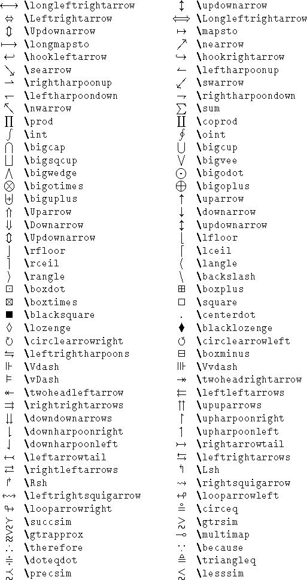
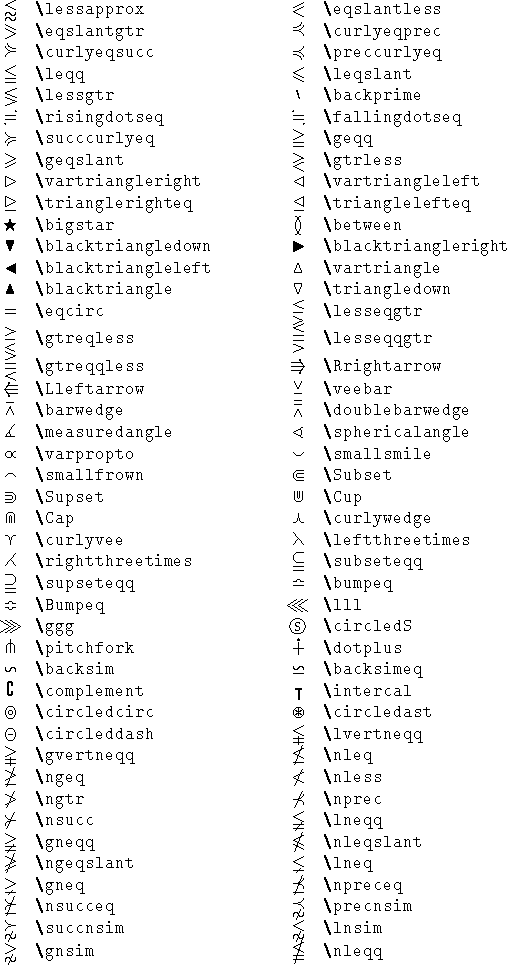
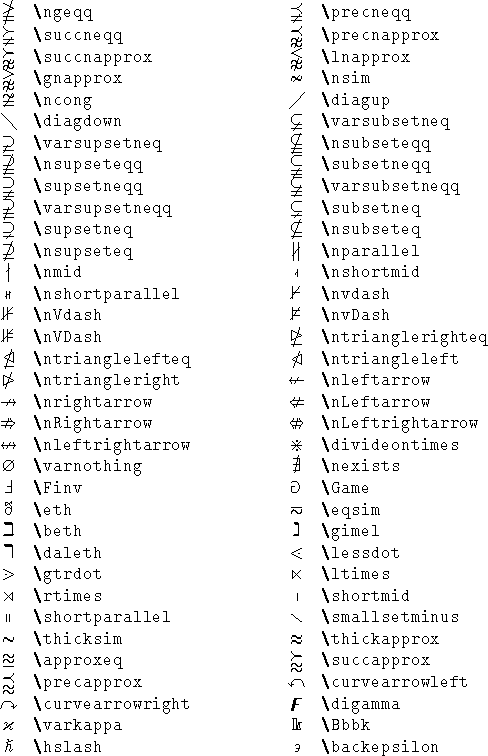

Latex
Table of Contents
1 TikZ
1.1 单位
cm |
|
|---|---|
em |
|
ex |
|
pt |
1.2 \draw
\draw [<style>, ...] <path>/<shape>;
| 颜色 | <color> |
|---|---|
| 粗细 | thick very thick |
thin very thin |
|
| 样式 | dashed dotted |
| 坐标 | (<x>,<y>) -- (<x>,<y>) -- ... |
|---|---|
| 闭合路径 | (<x>, <y>) -- ... cycle |
1.3 \fill
\fill [<style>, ...] <shape>
| 颜色 | <color> |
|---|---|
<color_1>!<percent>!<color_2> |
|
| 边框 | draw=<color> |
1.4 \def
\def\<name> at (#1,#2) {<command>}
\def\mirror at (#1,#2) {\draw (#1,#2) rectangle ++(2,2);}
\begin{tikzpicture}
\mirror at (1,2)
\mirror at (2,4)
\end{tikzpicture}
1.5 \tikzstyle
\tikzset{
<class>/.style={<attr>=<value>, ...}
}
\tikzstyle {<class>} = [<attr>=<value>, ...]
every * |
node |
label |
1.5.1 属性
| 含义 | 可选值 | |
|---|---|---|
| 外观 | ||
<shape> |
rectangle etc. |
|
| 边框 | ||
draw |
||
draw=<style> |
dashed none etc. |
|
draw=<color> |
||
<width> |
thick etc. |
|
rounded corners=<size> |
||
| 大小 | ||
minimum size=<size> |
||
minimum height=<size> |
||
minimum width=<size> |
||
inner sep=<size> |
||
| 位置 | ||
xshift=<size> |
X 轴偏移 | |
yshift=<size> |
Y 轴偏移 | |
| 颜色 | ||
color=<color> |
文字颜色 | |
fill=<color> |
填充颜色 | |
| 文字 | ||
font=<size> |
字体大小 | \small \large |
font=<family> |
字体类型 | \sffamily Sans serif |
\ttfamily Monospace |
||
text width=<size> |
||
text centered |
||
label={} |
1.5.2 示例
label={[shift={(-3ex,3ex)}]south east:#1}
1.6 \node
\node [<options>] (<name>) at (<x>,<y>) {<label>};
1.7 trees
1.7.1 属性
anchor=<direction> |
|
parent anchor=<direction> |
|
growth parent anchor=<direction> |
|
| 间距 | |
level distance=<size> |
|
sibling distance=<size> |
2 数学公式
| $\times$ | \times |
|---|---|
~ |
\textasciitilde |
| $\ldots$ | \ldots |



